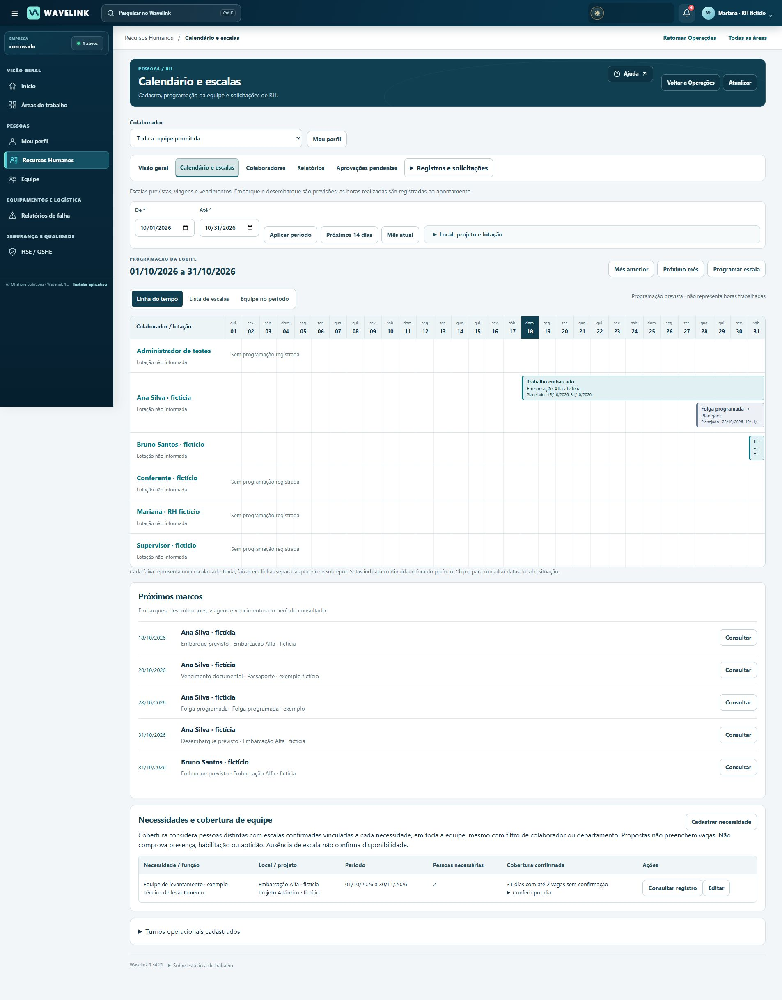
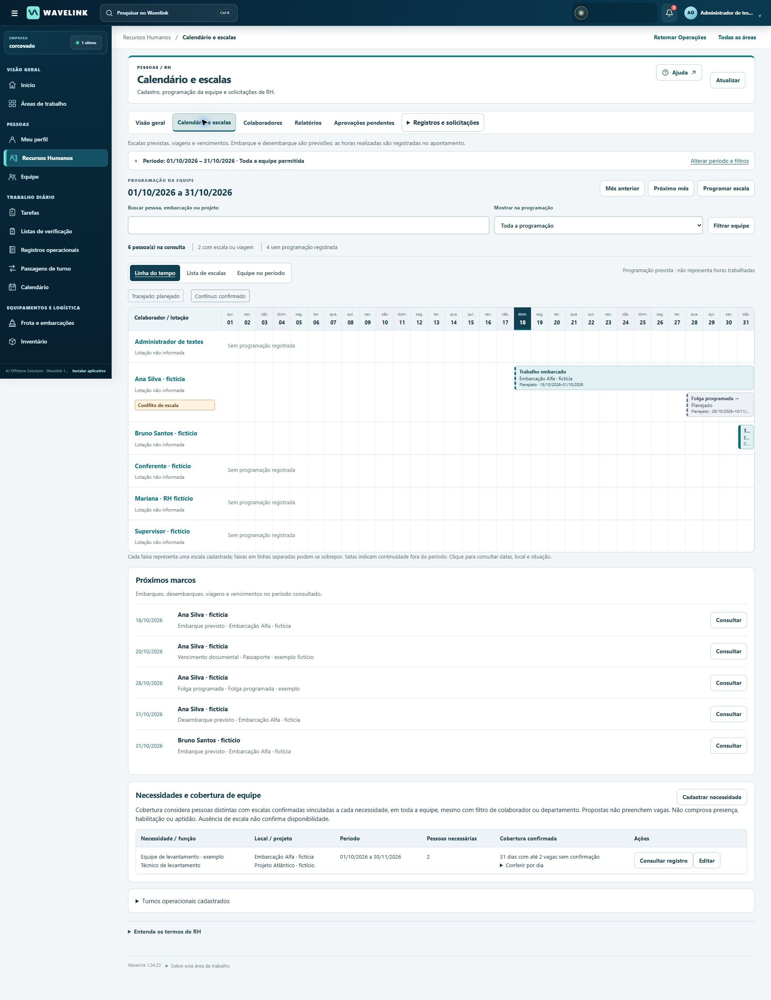
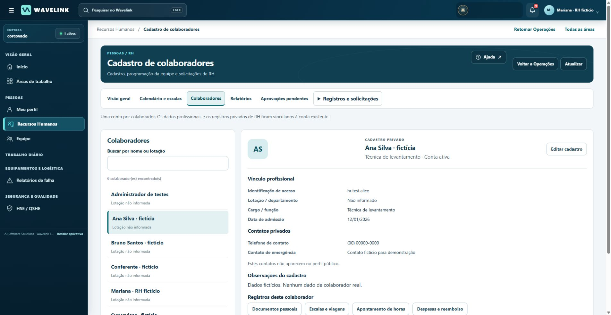
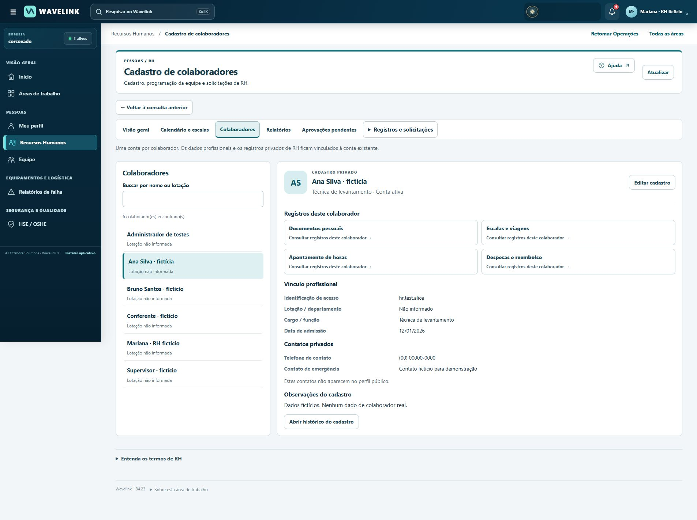
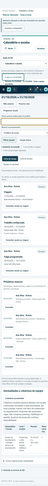

WAVELINK · AJ OFFSHORE SOLUTIONS · CORCOVADO
UI123 — encontrar, entender e concluir
Revisão construída sobre a UI122 publicada, preservando a frente de RH e os recursos de Operações. Versão 1.34.23.
Abrir a Corcovado
Estado desta entrega
Este documento registra a implementação e a validação local. O comprovante de publicação informa separadamente o commit e o deployment efetivamente ativos.
As imagens usam somente pessoas e registros fictícios em ambiente local. O acesso automatizado à Corcovado está bloqueado pela ferramenta do navegador, apesar das permissões concedidas. A aprovação de testes locais não comprova o funcionamento da interface em produção.
Problemas encontrados e mudanças aplicadas
| Problema observado | Mudança implementada | Resultado verificável |
|---|
| Cabeçalho ocupava a largura do celular e ocultava o menu da conta. | Busca e distintivo compactos; controles com nomes acessíveis; cabeçalho do RH em duas linhas. | Conta, avisos e busca cabem na largura de 390 px. |
| Filtros e navegação empurravam as escalas para baixo. | Período e filtros avançados recolhíveis; seletor de seção no celular; filtros de equipe junto à programação. | Busca por pessoa, lotação, embarcação e projeto; situações como conflito, viagem e ausência de programação. |
| Confusão entre escala prevista, confirmação e trabalho realizado. | Legenda, texto de situação, bordas distintas e resumo do escopo; cartões no celular e alternativas em lista/equipe. | Ausência de escala nunca é apresentada como disponibilidade. Cobertura permanece identificada como consulta da equipe completa. |
| Abrir um colaborador interrompia a consulta. | Retorno à consulta anterior com período e filtros; atalhos dos registros acima dos contatos do perfil. | Calendário → colaborador → documento → retorno mantém a consulta. |
| Reenviar uma solicitação exigia abrir os detalhes. | “Enviar para análise” na lista de registros próprios elegíveis; justificativas de devolução e rejeição na lista. | Um passo de navegação a menos, com a mesma confirmação, versão e autorização. |
| Grupos vazios e rótulos pouco claros na navegação. | Ocultar grupos sem links permitidos; foco ao fechar a consulta; títulos de seção, avisos e rótulos operacionais em português. | Ações acessíveis conforme cada conta, sem concessões novas. |
O sistema visual mantém as marcas e imagens originais: azul profundo, verde azulado, superfícies claras, bordas e espaçamento consistentes. Foram usados componentes e fontes já existentes, sem novas bibliotecas, fontes externas ou imagens pesadas. Indicadores, alertas e linha do tempo utilizam os registros autorizados devolvidos pelo aplicativo; nenhum indicador comercial ou de produtividade foi inventado.
Antes e depois
Comparação da UI122 com a UI123 no mesmo cenário fictício de programação. A captura final utiliza a conta administradora; o menu lateral reflete seus acessos adicionais.

Antes: filtros abertos e maior distância até a programação.
Depois: período resumido, busca contextual, situações explícitas e calendário legível.
Antes: registros menos próximos da identificação da pessoa.
Depois: registros pessoais prioritários e caminho de retorno.
No celular: seções acessíveis por seletor e escalas em cartões. Datas e situações aparecem por escrito.
Referências profissionais e decisões
| Fonte oficial consultada | Padrão útil e aplicação no Wavelink |
|---|
Senior — escalas e horários
Senior — afastamentos | Dados contratuais, escalas e apuração possuem funções diferentes. Adotamos cadastro de colaboradores, escala, jornada e afastamento em seus contextos. A UI não sugere que o apontamento calcule folha de pagamento. |
| TOTVS — alteração individual de lotação (FP1350) | Lotação identifica vínculo organizacional. No Wavelink, “Lotação / departamento” fica separada da embarcação/local de uma escala. Consulta documental por resultado oficial indexado; a abertura direta retornou restrição de acesso. |
| Mintra — OCS HR | Planejamento de pessoal, competências, viagens e acesso do colaborador aparecem como processos relacionados. A referência orientou o perfil central e a leitura dos períodos. Página e imagem oficial consultadas; não houve acesso a demonstração autenticada. |
| Fracttal — uso do Fracttal BI | Documentação e capturas oficiais mostram filtros de período próximos dos indicadores e definição da origem dos dados. O Wavelink explicita período, pessoas consultadas, cobertura e unidades; mantém tabelas quando permitem conferir melhor o detalhe. Não foram copiados ativos visuais. |
| Bram Offshore — glossário marítimo sobre pré-embarque | Exemplo brasileiro real de comunicação do setor. Embarque, desembarque, troca de turma e preparação documental são usados em contexto operacional, sem transformar previsão de escala em comprovação de presença ou aptidão. |
A pesquisa foi documental, complementada por imagens atuais disponíveis nos sites oficiais. Não foi realizada contratação, demonstração privada ou comunicação com fornecedores.
Glossário adotado
| Termo | Significado na interface |
|---|
| Cadastro de colaboradores | Dados profissionais e contatos privados vinculados à conta já existente. |
| Lotação / departamento | Vínculo organizacional da pessoa; não indica automaticamente onde está embarcada. |
| Escala de trabalho | Programação de períodos de trabalho, folga, viagem ou afastamento. Planejada e confirmada são situações distintas. |
| Jornada e apontamento de horas | Jornada é o período de trabalho; o apontamento registra as horas efetivamente realizadas. Não equivale à folha de pagamento. |
| Embarque e desembarque previstos | Marcos calculados a partir da programação registrada; não comprovam movimentação efetiva. |
| Disponibilidade informada | Situação registrada explicitamente. “Sem programação” significa falta de escala ou viagem na consulta. |
| Afastamento | Período cadastrado de ausência. Não exige acrescentar informação médica à interface. |
| Gestão documental e vencimento | Cadastro, anexos, conferência e validade dos documentos pessoais. Arquivo enviado não significa documento conferido. |
| CIR | Caderneta de Inscrição e Registro, documento marítimo apresentado no contexto dos documentos pessoais. |
| Despesa apresentada / reembolso aprovado | A despesa é enviada com dados e comprovantes para análise. A aprovação autoriza o reembolso no fluxo; não confirma pagamento bancário. |
| Devolvido / rejeitado | Devolução permite corrigir e reenviar. Rejeição encerra a análise daquele envio com justificativa, mantendo seu histórico. |
Validação e limites
153 verificações automatizadas passaram: 92 testes Python de regras, privacidade e fluxos de RH e 61 verificações JavaScript de formulários, permissões, idioma, filtros e calendário. A reconstrução integral do aplicativo verifica todos os hashes do manifesto antes da publicação.
- RH: localizar colaborador, filtrar conflitos, consultar documento privado e anexo, identificar vencimento e retornar à consulta.
- Colaborador: visualizar apenas os próprios registros; corrigir horas devolvidas; fechar, retomar e salvar rascunho; reenviar para análise.
- Revisor: justificativa obrigatória, devolução, rejeição e aprovação por outra conta. Valores, comentários e versões foram conferidos na interface.
- Operações: localizar equipamento, abrir ordem, retomar rascunho e salvar etapa; voltar do RH para a mesma ordem.
- Administrador: navegar no diretório e revisar as permissões em português; cancelar sem salvar alterações.
- Responsividade e acessibilidade: largura de 390 px, seletor de seções, textos longos, foco de teclado e retorno do foco ao fechar a consulta. Não equivale a certificação completa WCAG nem teste em todos os aparelhos.
A validação de produção permanece separada. Nenhum teste local enviou e-mail, alterou usuários reais ou apagou registros da Corcovado. O usuário temporário de produção deve permanecer; a limpeza dos dois testes antigos continua pendente do acesso ao site.
Recomendações posteriores: testar com profissionais reais de RH; conferir grandes volumes e aparelhos físicos; ampliar a revisão de módulos operacionais pouco usados. Textos originais inseridos pelos usuários são preservados, inclusive quando escritos em inglês.
Preservação e recuperação
A UI123 não altera banco, schema, credenciais, políticas de acesso ou regras de aprovação. O serviço, disco, domínio e configuração do Render são mantidos. A aplicação é reconstruída sobre o manifesto exato da UI122; um arquivo de origem divergente interrompe a construção.
O backup anterior à publicação foi executado como proprietário dos arquivos (UID 10001), usando cópia consistente SQLite e conferência dos demais arquivos. Banco íntegro e arquivo compactado verificado. Não houve parada de processos nem alteração dos dados ativos para esse backup de interface.
/var/data/wavelink-release-backups/20261018T005947Z-before-ui123
Para reverter apenas a interface, republicar o commit UI122 28e0dcff4e79c5720aaa322d4bf70170f6ce9653 no mesmo serviço. Não restaurar o banco por uma simples reversão visual: isso poderia remover trabalho posterior ao backup. Restauração de dados exige procedimento separado, processos parados e conferência prévia.